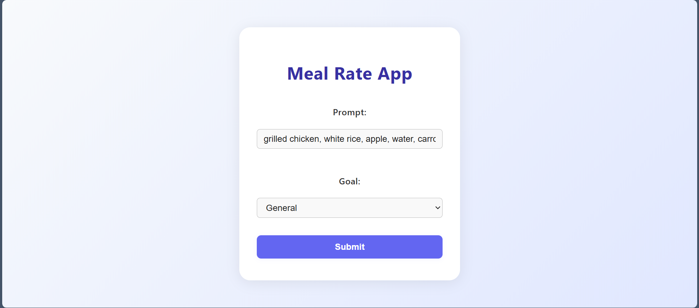
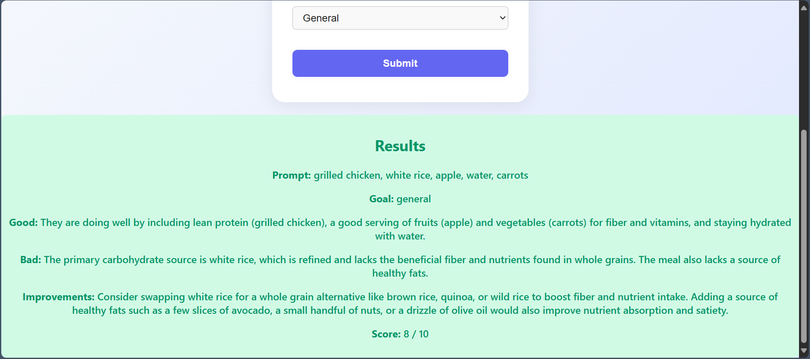

A website where users enter a meal (list of food items) and an AI will output nutritional Info/rating.
To understand how to incorporate AI LLMs into an application.
Node/Express (backend), React (frontend), and googles Gemini API keys.
With the rise of AI I thought I would try my hand in understanding how to utilize them in a project. The main focus of this blog is my journey on how to use Large Language Models in an application and some key take aways I got around the technology. Large Language Models are AI that understands human language and responds to it when prompted. I will assume some basic understanding of JavaScript and related frameworks/tools like Node, Express, and React. The project has Node/Express backend and a React frontend. We will largely be looking at the backend where most of the logic around AI related code is done.
The main thing to setup is the API keys for the LLM. In this project, I use googles Gemini API for this, which are free to use and available here. These keys should be private so they are stored in a ".env" file in the backend. I hope it goes without saying, but things like API Keys should generally not be made public for security reasons.
// .env file
GEMINI_API_KEY="Your key here"
I also use googles library involving generative ai. This will handle most of the details in connecting and setup when using the AI. Note that this is installed in the backend only.
// Example of installing
npm install @google/generative-ai
The API is simple to use with only a bit of boilerplate code that needs to get setup involving googles generative-ai library. Once the boilerplate is setup, there will be a 'model' object where you pass it in a prompt string and it will output a response to the prompt as a response object.
//server.js
// setup of library/use at top
const { GoogleGenerativeAI } = require('@google/generative-ai');
const genAi = new GoogleGenerativeAI(process.env.GEMINI_API_KEY);
// In Post request
const prompt = "Do this ….";
const model = genAi.getGenerativeModel({ model: 'gemini-2.5-flash' });
const result = await model.generateContent(prompt);
const response = result.response;
const text = response.text();
System Prompts can be thought of as set of rules that are prepended to the user prompt to add more contexts. This is a vital part in tailoring the AI to do specifically what the app requires. For example, the goal of my app is that the user inputs a list of foods and it will output info/rating about the nutritional value. However, If I only pass the prompt the user enters and pass it to the AI then the AI has no context of what it should be doing with that list of food items. That is where system prompts come in. To do this I added a string (system prompt) that gives more context, for example "You are a nutritionist expert and give advice on the following food items: " and then attach the users prompt of food items at the end, and pass that to the AI. This example is a bit simplified compared to my actual system prompt but you get the point. System prompts can also be used to format the results in certain ways and even add various restrictions.
When it came to maintaining security around using LLMs, there were 3 areas that needed the most attention. 1) Checking the user prompt before sending to the AI. This can involve things like null check or validation. I didn’t include much validation to allow user flexibility but in hindsight, it might not have been the best choice. I probably should have added more specification to how to enter data and incorporate some checks to go with them. 2) Adding Checks in the system prompt, in other words, make the AI handle some of the checks . This can be things like "if anything that isn't a food item is provided in the list then respond with only food is acceptable". 3) Checking the response of the AI. This part can include things like format checking. For example, my system prompt includes a part about returning result in a json format so I also included some checks making sure it is json and that it has the right fields in it.
Example (before submiting):

Example (after submiting):

My overall takeaways from using LLMs is that it is interesting and simple to use but also provides some difficulties in certain areas like security. I had a number of project ideas involving LLMs but I ended up focusing on a meal rating app given my interest in eating healthy. The expected input and output of the app was also pretty simple so once I got the AI working I was up and running pretty quickly. After that came the matter of security. Something to not about LLMs is that they are non-deterministic. In other words, one input can produce different outputs. This made testing for expected outputs challenging. There are various checks I had in place around AI prompts and results but the nature of AI makes a bit unpredictable. I think because it understands human language it becomes hard to cover the ground of everything that can logically be said. And that not even mentioning the problem of how does one verify the correctness of a response. Maybe for my next project I will look into more security methods around LLMs or different techniques like RAG to get a better grasp of AI.
Google. AI Studio. https://ai.google.dev/aistudio. Accessed 10 Aug. 2025.
Back to Projects